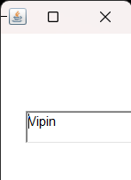

GRAPHICAL USER INTERFACE ( AWT )
Choose Topic to See Programs
1.Create a simple AWT application that displays a button with FlowLayout manager.
Program:
import java.awt.*;
import java.awt.event.*;
class a
{
public static void main(String[] x)
{
// Create a new frame.
Frame f = new Frame("AWT Button FlowLayout ");
// Set the size of the frame.
f.setSize(300, 300);
// Handle the window closing event.
f.addWindowListener(new WindowAdapter() {
public void windowClosing(WindowEvent e) {
System.exit(0);
}
});
// Create a button and add it to the frame.
Button b1= new Button("Click me!");
f.add(b1);
// Create a label and add it to the frame.
Label l1 = new Label("You have not clicked the button yet.");
f.add(l1);
// Set the layout manager for the frame to FlowLayout.
f.setLayout(new FlowLayout());
// Display the frame.
f.setVisible(true);
}
}
Output:

2.Create a simple AWT application that displays a button with Custom Layout.
Program:
import java.awt.*;
import java.awt.event.*;
class a{
public static void main(String[] x)
{
// Create a new frame.
Frame f = new Frame("AWT Button custom Layout ");
// Set the size of the frame.
f.setSize(300, 300);
// Create a button and add it to the frame.
Button b1= new Button("Click me!");
// Set the layout manager for the frame tocustom layout.
b1.setBounds(150,100,60,60);
f.add(b1);
// Create a label and add it to the frame.
Label l1 = new Label("Please click the button.");
f.add(l1);
// Display the frame.
f.setVisible(true);
// Handle the window closing event.
f.addWindowListener(new WindowAdapter() {
public void windowClosing(WindowEvent e) {
System.exit(0);
}
});
}
}
Output:

3.Create a simple AWT application that displays multiple buttons with BorderLayout manager (North, East, West, South, Center).
Program:
import java.awt.BorderLayout;
import java.awt.Button;
import java.awt.Frame;
class AWTButtonExample {
public static void main(String[] args) {
Frame frame = new Frame("AWT Button Example");
Button northButton = new Button("North");
Button eastButton = new Button("East");
Button westButton = new Button("West");
Button southButton = new Button("South");
Button centerButton = new Button("Center");
frame.add(northButton, BorderLayout.NORTH);
frame.add(eastButton, BorderLayout.EAST);
frame.add(westButton, BorderLayout.WEST);
frame.add(southButton, BorderLayout.SOUTH);
frame.add(centerButton, BorderLayout.CENTER);
frame.setSize(400, 300);
frame.setVisible(true);
frame.addWindowListener(new java.awt.event.WindowAdapter() {
public void windowClosing(java.awt.event.WindowEvent windowEvent) {
System.exit(0);
}
});
}
}
Output:

4.Create a simple AWT application that displays a TextField with FlowLayout manager.
//create a simple AWT application that displays a TextField with FlowLayout manager.
class awt{
public static void main(String[] gfdsafgvsds){
java.awt.Frame f = new java.awt.Frame();
java.awt.TextField t = new java.awt.TextField("Vipin");
f.setSize(100,200);
f.setVisible(true);
f.add(t);
}
}
Output:

5.Create a simple AWT application that displays a TextField with Custom Layout.
Program:
//create a simple AWT application that displays a TextField with Custom manager.
class awt{
public static void main(String[] gfdsafgvsds){
java.awt.Frame f = new java.awt.Frame();
java.awt.TextField t = new java.awt.TextField("Vipin");
f.setLayout(null);
t.setBounds(30,100,150,30);
f.setSize(100,200);
f.setVisible(true);
f.add(t);
}
}
Output:

6.Create a simple AWT application that displays a Checkbox with FlowLayout manager.
Program:
//Create a simple awt Application that displays a Checkbox with flowLayout Manager.
class awt{
public static void main(String[] gfdsafgvsds){
java.awt.Frame f = new java.awt.Frame();
java.awt.Checkbox t = new java.awt.Checkbox("Vipin");
f.setSize(100,200);
f.setVisible(true);
f.add(t);
}
}
Output:

7.Create a simple AWT application that displays a Checkbox with Custom Layout.
//Create a simple awt Application that displays a Checkbox with Custom Manager.
class awt{
public static void main(String[] gfdsafgvsds){
java.awt.Frame f = new java.awt.Frame();
java.awt.Checkbox t = new java.awt.Checkbox("Vipin");
f.setLayout(null);
t.setBounds(30,100,150,30);
f.setSize(100,200);
f.setVisible(true);
f.add(t);
}
}
Output:

8.Create a simple AWT application that displays a Label with FlowLayout manager.
//Create a simple awt Application that displays a Label with FlowLayout manager.
class awt{
public static void main(String[] gfdsafgvsds){
java.awt.Frame f = new java.awt.Frame();
java.awt.Label t = new java.awt.Label("Vipin");
f.setSize(100,200);
f.setVisible(true);
f.add(t);
}
}
Output:

9.Create a simple AWT application that displays a Label with Custom Layout.
//Create a simple awt Application that displays a Label with CustomLayout manager.
class awt{
public static void main(String[] gfdsafgvsds){
java.awt.Frame f = new java.awt.Frame();
java.awt.Label t = new java.awt.Label("Vipin");
f.setLayout(null);
t.setBounds(334,100,150,30);
f.setSize(100,200);
f.setVisible(true);
f.add(t);
}
}
Output:

10.Create a simple AWT application that displays a Choice with FlowLayout manager.
import java.awt.Choice;
import java.awt.FlowLayout;
import java.awt.Frame;
import java.awt.event.WindowAdapter;
import java.awt.event.WindowEvent;
public class ChoiceWithFlowLayoutExample {
public static void main(String[] args) {
// Create a frame
Frame frame = new Frame("Choice with FlowLayout Example");
// Create a Choice component
Choice choice = new Choice();
choice.add("Option 1");
choice.add("Option 2");
choice.add("Option 3");
// Set the layout manager for the frame to FlowLayout
frame.setLayout(new FlowLayout());
// Add the Choice component to the frame
frame.add(choice);
// Set frame properties
frame.setSize(300, 200);
frame.setVisible(true);
// Add a window listener to handle closing the frame
frame.addWindowListener(new WindowAdapter() {
public void windowClosing(WindowEvent we) {
System.exit(0);
}
});
}
}
Output:
11.Create a simple AWT application that displays a Choice with Custom Layout.
import java.awt.Choice;
import java.awt.FlowLayout;
import java.awt.Frame;
public class CustomLayoutChoiceExample extends Frame {
private Choice choice;
public CustomLayoutChoiceExample() {
// Set the layout manager for the frame
setLayout(new FlowLayout());
// Create a Choice component
choice = new Choice();
choice.add("Option 1");
choice.add("Option 2");
choice.add("Option 3");
// Add the Choice component to the frame
add(choice);
// Set frame properties
setTitle("Custom Layout Choice Example");
setSize(300, 200);
setVisible(true);
}
public static void main(String[] args) {
new CustomLayoutChoiceExample();
}
}
Output:
12.Create a simple AWT application that displays a CheckboxGroup with FlowLayout manager.
import java.awt.*;
import java.awt.event.*;
class awtpro1{
awtpro1(){
Frame f= new Frame("checkbox Group");
Label l1= new Label("which is your favourite programming language?");
CheckboxGroup cg= new CheckboxGroup();
Checkbox c1= new Checkbox("HTML",cg, false);
Checkbox c2= new Checkbox("C",cg, false);
Checkbox c3= new Checkbox("C++",cg, false);
Checkbox c4= new Checkbox("JAVA",cg, false);
f.setSize(700,400);
f.setLayout( new FlowLayout());
f.setVisible(true);
f.add(l1);
f.add(c1);
f.add(c2);
f.add(c3);
f.add(c4);
f.addWindowListener (new WindowAdapter() {
public void windowClosing (WindowEvent e) {
System.exit(1);
}
});
}
public static void main(String st[]){
new awtpro1();
}
}
Output:

13.Create a simple AWT application that displays a CheckboxGroup with Custom Layout.
import java.awt.*;
import java.awt.event.*;
class CustomCheckboxLayoutExample extends Frame {
public CustomCheckboxLayoutExample() {
setTitle("CheckboxGroup with Custom Layout");
setSize(300, 200);
addWindowListener(new WindowAdapter() {
public void windowClosing(WindowEvent we) {
System.exit(0);
}
});
CheckboxPanel checkboxPanel = new CheckboxPanel();
CheckboxGroup checkboxGroup = new CheckboxGroup();
Checkbox checkbox1 = new Checkbox("Option 1", checkboxGroup, false);
Checkbox checkbox2 = new Checkbox("Option 2", checkboxGroup, false);
Checkbox checkbox3 = new Checkbox("Option 3", checkboxGroup, false);
checkboxPanel.addCheckbox(checkbox1);
checkboxPanel.addCheckbox(checkbox2);
checkboxPanel.addCheckbox(checkbox3);
add(checkboxPanel);
}
public static void main(String[] args) {
CustomCheckboxLayoutExample example = new CustomCheckboxLayoutExample();
example.setVisible(true);
}
}
class CheckboxPanel extends Panel {
private int checkboxCount;
private int padding = 10;
public CheckboxPanel() {
setLayout(null); // Use a null layout for custom positioning
}
public void addCheckbox(Checkbox checkbox) {
checkboxCount++;
checkbox.setBounds(padding, checkboxCount * 30, 100, 20);
add(checkbox);
}
}
Output:

14.Create a simple AWT application that displays a List with FlowLayout manager.
import java.awt.*;
import java.awt.event.*;
class Awt14 {
private Frame frame;
private List myList;
public Awt14() {
frame = new Frame("AWT List Example");
myList = new List();
// Add items to the List
myList.add("Item 1");
myList.add("Item 2");
myList.add("Item 3");
myList.add("Item 4");
myList.add("Item 5");
// Set FlowLayout for the frame
frame.setLayout(new FlowLayout());
// Add the List to the frame
frame.add(myList);
// Add a WindowListener to handle closing the frame
frame.addWindowListener(new WindowAdapter() {
public void windowClosing(WindowEvent windowEvent) {
System.exit(0);
}
});
// Set frame properties
frame.setSize(300, 200);
frame.setVisible(true);
}
}
Output:

15.Create a simple AWT application that displays a List with Custom Layout.
import java.awt.Choice;
import java.awt.Frame;
class prog15{
public static void main(String args[]){
/*
Topic= Graphical user interface AWT
prog.no 15.Create a simple AWT application that displays a List with Custom
Layout.
*/
Frame f=new Frame("Custom list app");
Choice choose =new Choice();
choose.add("Home");
choose.add("Office");
choose.add("Card");
choose.add("Tables");
choose.add("Hourse");
choose.add("Purse");
choose.add("All");
f.add(choose);
f.setSize(300,300);
f.setVisible(true);
}
}
Output:

16.Create a simple AWT application that displays a TextArea with FlowLayout manager.
import java.awt.*;
import java.awt.event.*;
class textarea extends Frame {
private TextArea textArea;
textarea() {
setTitle("TextArea with FlowLayout");
setSize(400, 300);
setLayout(new FlowLayout(FlowLayout.CENTER, 10, 10));
textArea = new TextArea(10, 30);
add(textArea);
addWindowListener(new WindowAdapter() {
public void windowClosing(WindowEvent we) {
System.exit(0);
}
});
}
public static void main(String[] args) {
textarea app = new textarea();
app.setVisible(true);
}
}
Output:

17.Create a simple AWT application that displays a TextArea with Custom Layout.
import java.awt.*;
import java.awt.event.*;
class CustomLayoutExample {
public static void main(String[] args) {
Frame frame = new Frame("Custom Layout Example");
TextArea textArea = new TextArea("This is a TextArea with a custom layout.");
frame.setLayout(new GridBagLayout());
GridBagConstraints gbc = new GridBagConstraints();
gbc.insets = new Insets(10, 10, 10, 10); // Add some padding
gbc.gridx = 0;
gbc.gridy = 0;
gbc.fill = GridBagConstraints.BOTH;
gbc.weightx = 1.0;
gbc.weighty = 1.0;
frame.add(textArea, gbc);
frame.addWindowListener(new WindowAdapter() {
public void windowClosing(WindowEvent e) {
System.exit(0);
}
});
frame.setSize(400, 300);
frame.setVisible(true);
}
}
Output:
18.Create a simple AWT application design a calculator that displays buttons, TextField with GridLayout manager.
class Calculator extends java.awt.Frame
{
Calculator()
{
setSize(400,500);
setResizable(false);
setLayout(null);
add(Calculator.myField());
Calculator.myButton(this,16);
}
private static java.awt.Font myFont(int size)
{
return new java.awt.Font("Arial",0,size);
}
private static java.awt.TextField myField()
{
java.awt.TextField fld = new java.awt.TextField();
fld.setBounds(0,0,400,100);
fld.setEditable(true);
fld.setFont(Calculator.myFont(25));
fld.setForeground(java.awt.Color.BLACK);
fld.setBackground(java.awt.Color.WHITE);
return fld;
}
private static void myButton(java.awt.Frame frame,int size){
java.awt.Button btn[] = new java.awt.Button[size];
int x = 0, y = 100; // default coordinates
char btn_label = ' ';
for (int i = 0; i < size; i++) {
btn[i] = new java.awt.Button();
if (i > 9){
switch(i){
case 10 : btn_label = '+'; break
case 11 : btn_label = '-'; break;
case 12 : btn_label = '*'; break;
case 13 : btn_label = '/'; break;
case 14 : btn_label = '%'; break;
default : btn_label = '=';}
btn[i].setLabel(""+btn_label+"");
}
else {
btn[i].setLabel(""+i+""); }
if (i != 0)
{
if ((i%4) == 0)
{
x = 0;
y += 100;
}
else
{
x += 100;
}
}
btn[i].setBounds(x,y,100,100);
Calculator.buttonStyle(btn[i],25);
// btn[i].addActionListener(btn[i]);
frame.add(btn[i]);
}
}
private static void buttonStyle(java.awt.Button btn, int size)
{
btn.setFont(Calculator.myFont(size));
btn.setForeground(java.awt.Color.GRAY);
btn.setBackground(java.awt.Color.WHITE);
}
private static void buttonActionStyle(java.awt.Button btn, int size)
{
btn.setFont(Calculator.myFont(size));
btn.setForeground(java.awt.Color.BLACK);
btn.setBackground(java.awt.Color.WHITE);
}
public static void main(String args[])
{
System.out.println(" Calculator execute ... ");
new Calculator().setVisible(true);
}
}
Output: